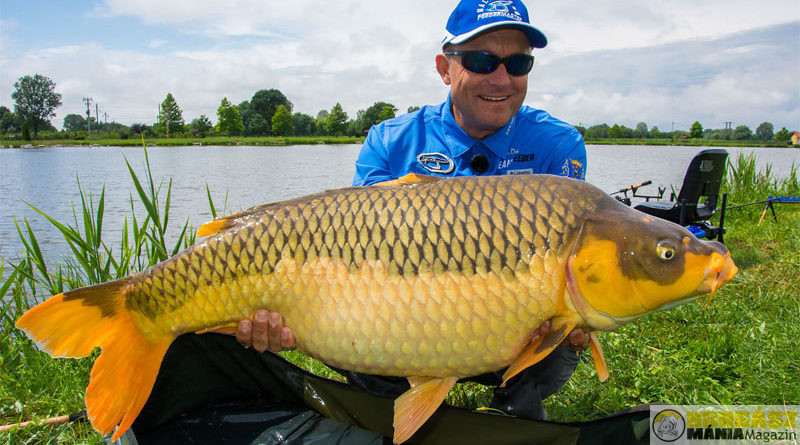

A fenekezés egy népszerű módszer, amely során a csalit a víz fenekére juttatjuk, így elérve a mélyebben tartózkodó halakat.
Ez a módszer ideális ponty, dévérkeszeg és amur fogására. Fontos a megfelelő etetés és a pontos dobás.
Két teknikát különböztetünk meg a feeder és a bojlis. A feeder teknikánál egy kosárba etető anyagot töltünk és a partról bedobva a vízbe. A bojlis modszernél egy nehéz olmot csonakal behúzunk majd a horog köré bojlit, vagy kukoricát szórünk.
Bővebben: haldorado.hu/fenekezes